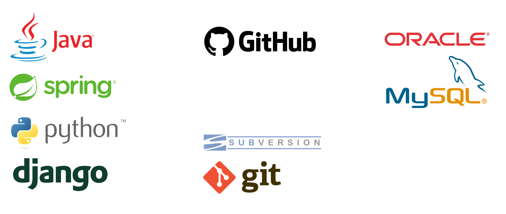
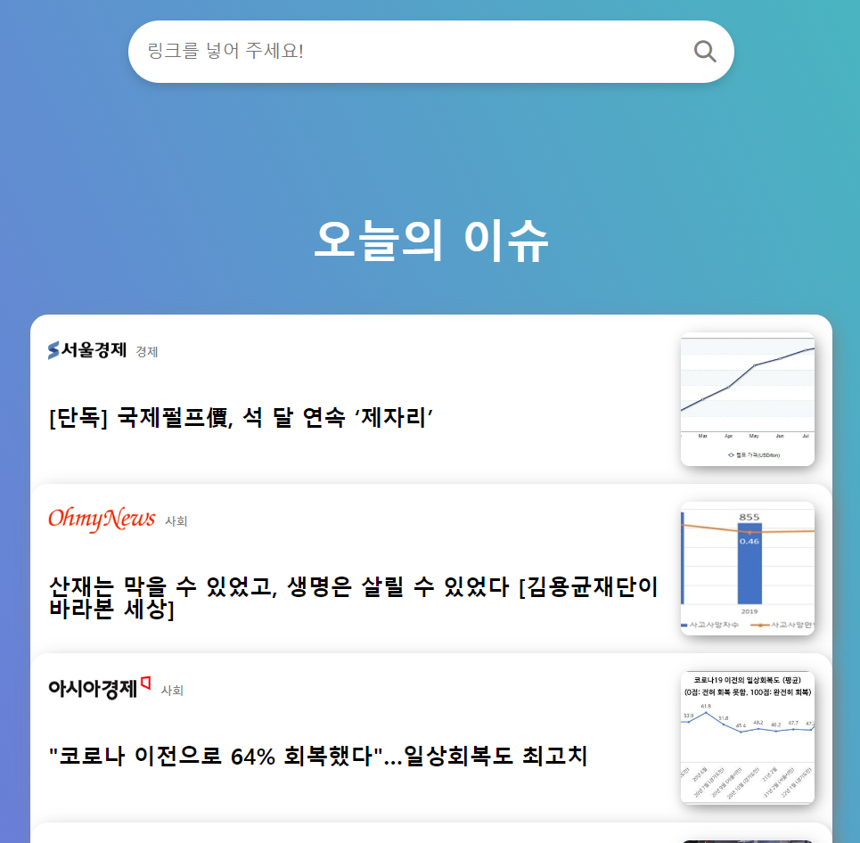
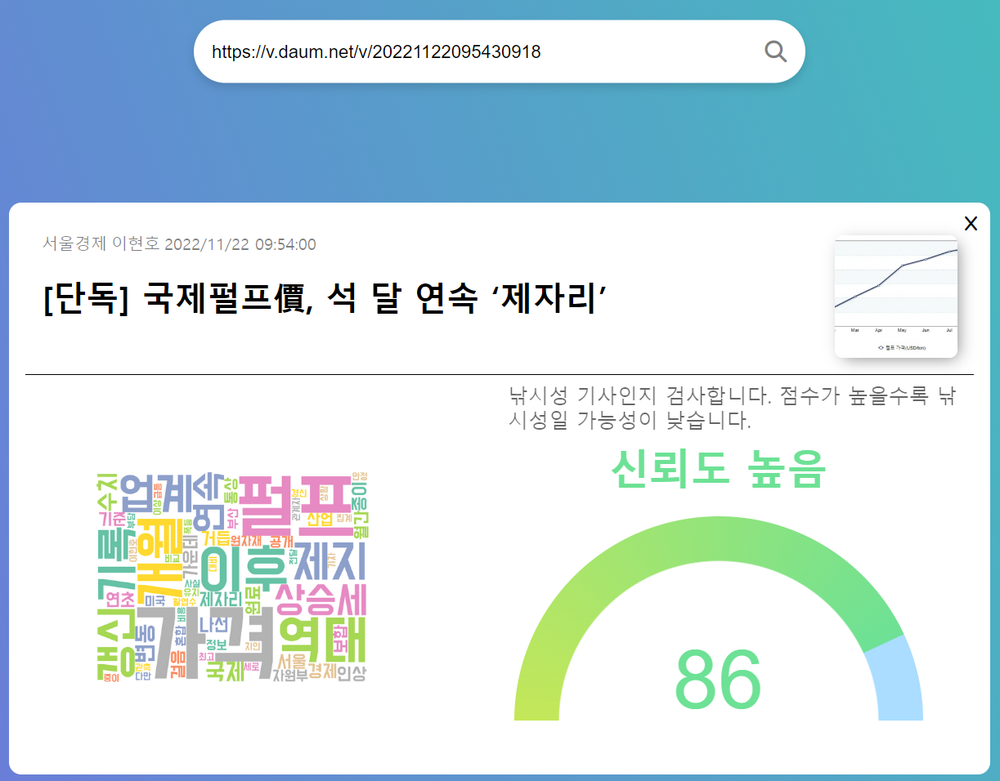
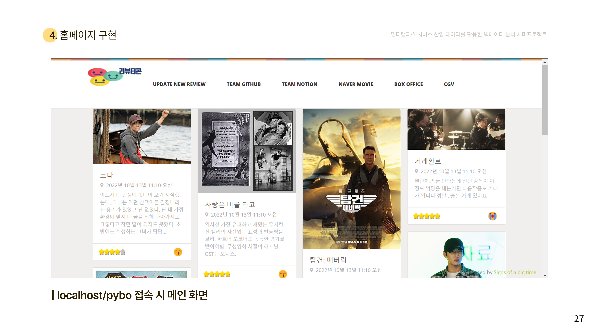
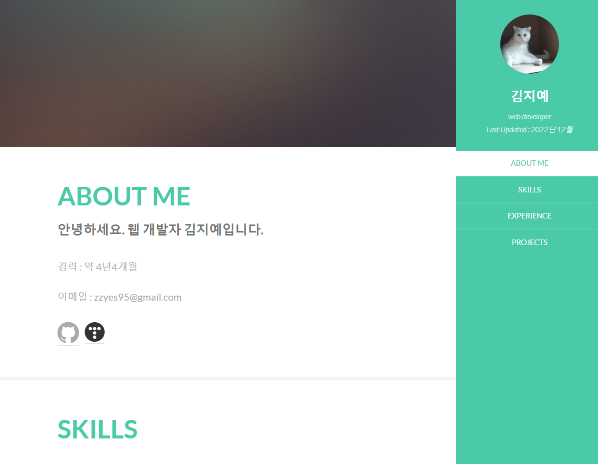

ABOUT ME
안녕하세요. 웹 개발자 김지예입니다.
- 새로운 기술을 배우는 노력을 하며, 효율적인 로직을 위해 고민합니다.
- 건강한 의사소통을 위해 노력합니다.
경력 : 약 6년 6개월
이메일 : zzyes95@gmail.com
github :
tistory :

- Java, Python
- Spring Framework, Django
- Github
- git, SVN
- Oracle, MySQL, PostgreSQL
- eclipse, vscode
멀티캠퍼스 빅데이터 교육 수료
기간 : 2022. 06. 30. ~ 2022. 11. 30. (890시간)
멀티잇 "서비스 산업 데이터를 활용한 빅데이터 분석" 과정 수료
프로젝트 최우수상 수상
우수훈련생 우수상 수상
파이썬 프로그래밍 · 알고리즘 · 데이터베이스/SQL
웹크롤링/Rest API를 활용한 데이터 수집 · Matplotlib, Seaborn을 활용한 데이터 시각화
머신러닝 이론 및 실습(Logistic Regression, NBC, SVM, Random Forest, KNN)
딥러닝 이론 및 실습(NN, CNN, RNN, Word2Vec, FastText, BERT 등)
빅데이터 분석을 위한 통계 알고리즘
기간 : 2019. 10. 10. ~ 2019. 10. 11. (16시간)
기관 : KITRI 한국정보기술연구원
고등학생 대상 Java 기초 강의 및 상담 멘토링 활동
기간 : 2017. 11. 4.
주최 : 대전YMCA
대덕인재개발원 교육 수료
기간 : 2017. 07. 24. ~ 2018. 02. 20. (1120시간)
대덕인재개발원 "전자정부 표준프레임워크 응용SW 개발자과정(NCS 7기)" 과정 수료
프로젝트 우수상 수상
내손으로 만드는 사물인터넷 아두이노 DIY 프로젝트
기간 : 2015. 07. ~ 2015. 08.
주최 : 대전창조경제혁신센터
모바일 웹앱 시제품 개발 캠프
기간 : 2015. 06. ~ 2015. 07.
주최 : 한남대학교 창업지원단
시선소프트 2024-09 ~ (재직중)
축산 스마트팜 빅데이터 플랫폼 구축사업
2024-09-09 ~ 2025-03 예정
▸프로젝트 내용
: 축산 스마트팜 빅데이터 플랫폼 구축사업
▸주요 수행내용
: ICT수집 데이터 마트데이터 수집 Batch 제작
: SBChart(softbowl제품) 활용 차트 시각화
: 유지보수 관련 기능 개선
▸개발 환경
Windows / postgreSQL,Oracle 12c / Eclipse, Dbeaver / JAVA / eGovFrame, Mybatis
로다아이티 2023-01 ~ 2024-09
청주시 데이터허브플랫폼 구축
2023-08-10 ~ 2024-06-28
▸프로젝트 내용
: 청주시 데이터허브플랫폼 구축 사업
▸주요 수행내용
: 데이터 구조 설계, ERD 산출물 작성 및 스키마 최적화
: 개발단계 주도(프로젝트 공통 및 세부기능 구현, 개발 산출물 작성)
: sgis 지도 api 프로젝트 적용 및 시각화
: amcharts 5 공통화 적용 및 시각화
: api 데이터 수집 연계 관련 기능 개선 및 적용
▸개발 환경
Windows / postgreSQL / Eclipse, Dbeaver / JAVA / eGovFrame, ibatis
※ 위 내용 중 영동군,청주시 프로젝트는 동일한 구축 환경에서 개발이 진행되었으며 대부분의 공통기능을 공유하여 같은 기간 내에 2개 프로젝트를 수행함.
각 발주기관 요구사항에 따라 세부 기능은 별도로 개발함
영동군 스마트 데이터 플랫폼 구축 사업
2023-08-02 ~ 2024-03-29
▸프로젝트 내용
: 영동군 스마트 데이터 플랫폼 구축 사업
▸주요 수행내용
: 데이터 구조 설계, ERD 산출물 작성 및 스키마 최적화
: 개발단계 주도(프로젝트 공통 및 세부기능 구현, 개발 산출물 작성)
: sgis 지도 api 프로젝트 적용 및 시각화
: amcharts 5 공통화 적용 및 시각화
: api 데이터 수집 연계 관련 기능 개선 및 적용
▸개발 환경
Windows / postgreSQL / Eclipse, Dbeaver / JAVA / eGovFrame, ibatis
국방과학연구소 e감사시스템 웹 취약점 점검 및 개선 용역
2023-06 ~ 2023-07
웹 취약점 점검 조치
크루메이트 2018-03 ~ 2022-06 (4년 4개월)
국가기록원 기록물관리정보시스템 통합유지보수
2021-09 ~ 2022-06
국가기록원 기록물관리정보시스템 통합유지보수
사용스택 : Java, 전자정부프레임워크, ibatis, Oracle
운영사이트 에러사항 원인파악 및 조치
사용자 문의 응대
대용량송수신 모듈 연계 관리
기록물 관련 데이터추출
웹기록물수집기 관리
프로젝트 업무 일감관리 사이트 관리
CJ온스타일 운영
2019-10 ~ 2021-05
CJ온스타일 운영
사용스택 : Java, Spring, mybatis, MYSQL(HeidiSQL), Oracle(SQL Developer)
출석체크 이벤트개발
모니터링 배치 문자 발송관리
카톡 공유 관련 이벤트 개발
선착순 이벤트 개발
실시간 래플 이벤트 개발
이벤트 관련 데이터 추출
(전시)Google Analytics 360 설치
ABC-MART 개발운영
2018-09 ~ 2019-09
ABC-MART 온라인 사이트 개발 및 운영.
사용 스택 : Java, Spring, Jsp, HTML, jQuery, JavaScript, MSSQL
쿠폰 적용 불가 상품 리스트 Admin, 운영 기능 개발.
페이스북 스크립트 픽셀 코드 설치.
Mssql 프로시져 수정
광고api설치
네파몰 고도화
2018-05 ~ 2018-08
네파몰 고도화
사용 스택 : Java, Spring, Jsp, HTML, jQuery, JavaScript, Oracle
관리자 사이트의 각종 통계조건검색을 위한 화면, Java,
Admin의 통계 조건검색 back / front.
오픈 이전 테스트.


딥러닝 모델을 통한 클릭베이트 기사 감지
- 멀티캠퍼스 교육 과정 중 최종 프로젝트
- 사용한 기술 : Django, SQLite, gunicorn, NGINX, WSL2, crontab
- Front-End: HTML, CSS, Javascript, Ajax, jQuery
- 주요 기능
- 팀 구성 : 5명
- 역할 : 환경구축, 워드클라우드, crontab, DB기획

ReviewTicon(리뷰티콘)
- 멀티캠퍼스 교육 과정 중 세미 프로젝트
- Crawling: Celenium, BeautifulSoup
- Data:Numpy, Pandas, Tensorflow, Konply
- Front-End: HTML, CSS, Javascript, Ajax, jQuery
- Back-End: Python3, Django, SQLite, Apache2.4, mod_wsgi, Flask
- 주요 기능
- 팀 구성 : 5명
- 역할 : 환경구축, DB기획, front-end, back-end

김지예 포트폴리오
- javascript, Firebase
- 주요 기능